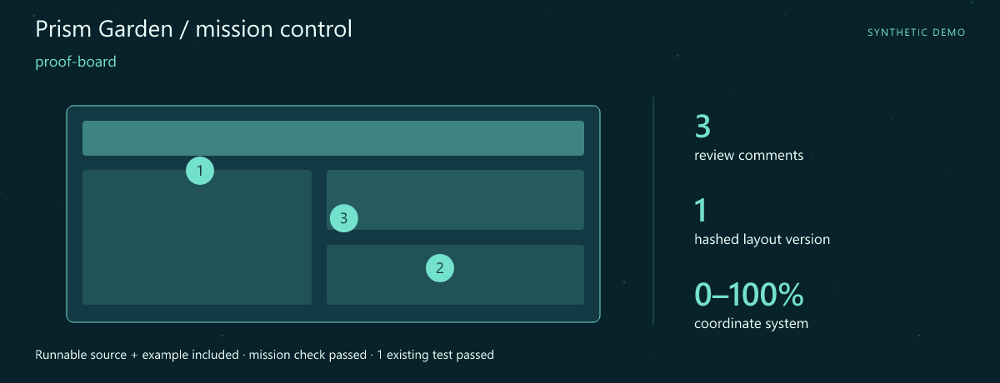
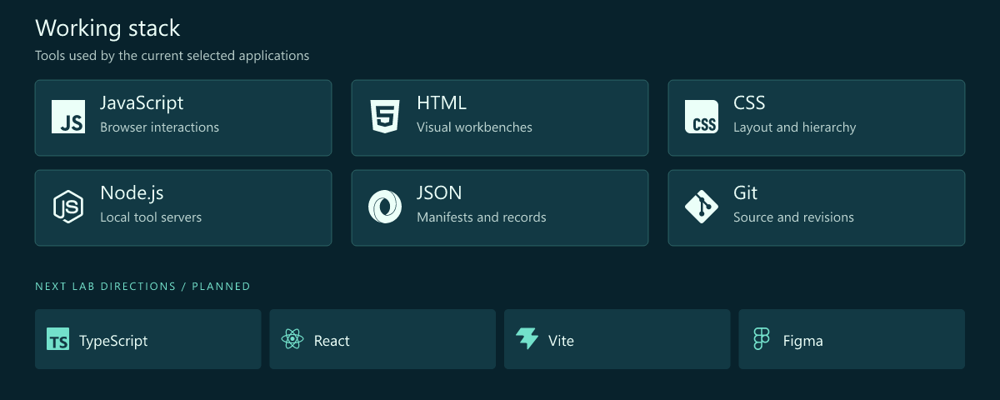
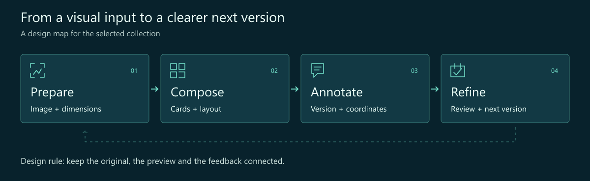
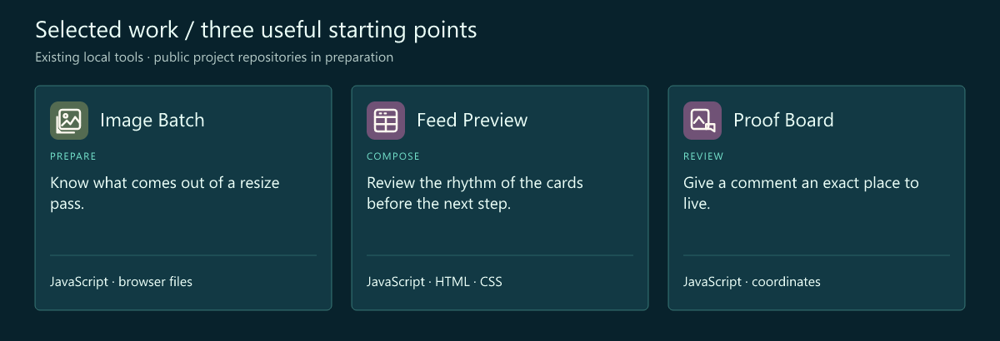
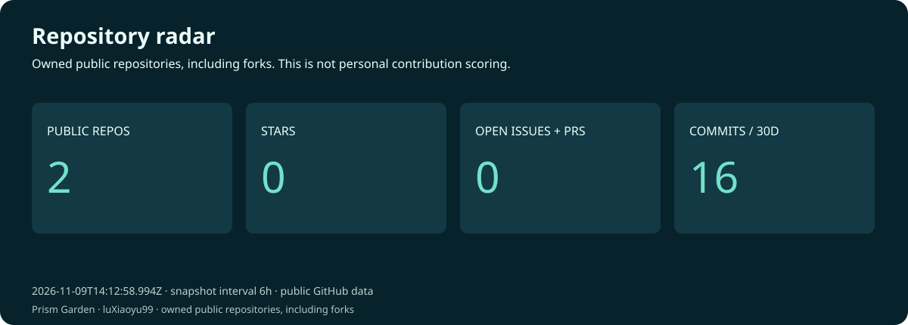
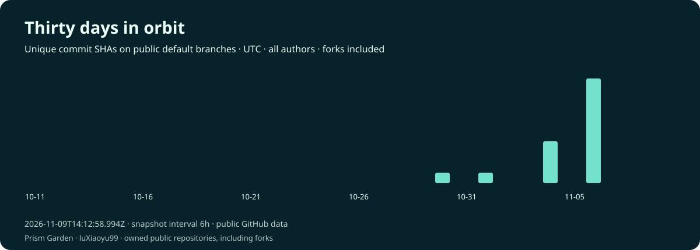
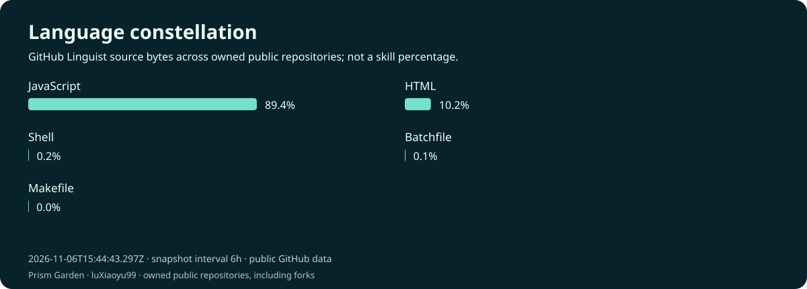
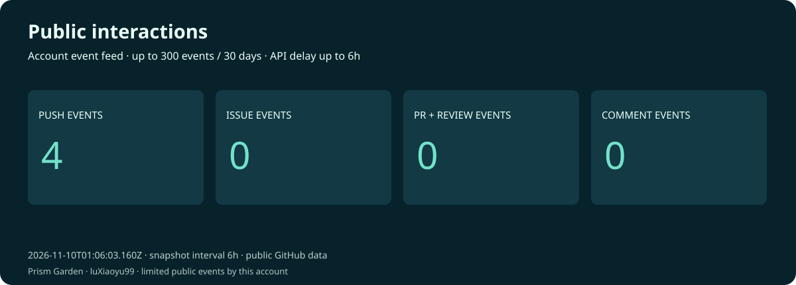

Xiaoyu Lu · Interface Developer · Visual Browser Tools
Prism Garden · Give every visual decision a place.
Make the details easier to see, compare and discuss.
Download the runnable mission · Launch guide · Working stack · Selected work
Mission control

First launch: proof-board. A complete source snapshot, synthetic example and assertion script are included. The mission check and 1 existing test passed. Try the mission · Snapshot and checked result.
I'm Xiaoyu Lu. This is a visual workbench for the moment before an export or a review: the crop, the rhythm of a card layout, the exact place a comment belongs.
The interface should make a visual decision easier to inspect. I like the path from a file to a preview, from a preview to feedback, and from feedback to a clearer next version.
What I focus on
- Image workflows. Give export dimensions, source files and results an understandable place.
- Interface composition. Cards, spacing and hierarchy should support a quick visual review.
- Feedback with context. Keep a comment tied to its layout version and coordinates.
Working stack

The upper panel shows technologies used by the selected tools. The lower row is the next lab track.
How I think about the work

Selected work
Three existing local tools form this curated collection. Their public project repositories are being prepared.

| Project / stack | Why it belongs here | Input → output |
|---|---|---|
| Image Batch JavaScript · browser files |
Know what comes out of a resize pass. Resize selected images and inspect an export manifest. | In: Images + maximum dimensions Out: Resized images + manifest |
| Feed Preview JavaScript · HTML · CSS |
Review the rhythm of the cards before the next step. Preview text-and-image cards locally with an adjustable column layout. | In: Card text + optional image Out: A local card preview |
| Proof Board JavaScript · coordinates |
Give a comment an exact place to live. Keep layout versions and coordinate-based comments in one review workflow. | In: Layout version + comments Out: A versioned feedback board |
A review comment with a home
x,y,text
32,48,Check the heading alignment
68,72,Give this caption more room
Synthetic feedback entries: a position and an actionable observation are a useful starting point for visual review.
Code and activity




These charts are rebuilt on a six-hour schedule after GitHub Pages is enabled. The observation time is printed on every chart. Commits are unique default-branch SHAs across all authors and owned public repositories, including forks. Language bytes describe repositories, not personal skill. Public interactions are a limited event feed (up to 300 events / 30 days), not visitor analytics. API and image caches may delay updates.
Live data and scope · Portfolio website · Refresh setup
Next lab
- Review each export. Make image-by-image output inspection more comfortable.
- Arrange with less friction. Explore easier card ordering and a typed layout model.
- Make feedback legible. Refine annotation states and the path between layout versions.
Start a conversation
A crop that needs context, a layout that is hard to compare or a review comment that gets lost is a useful interface problem to bring here.
Open the profile repository's issues · Browse the repositories
🎨 Tuning the details.
Fictional developer persona · AI-illustrated avatar. Curated tools retain original authors, licenses and commit history. Technology icons: Simple Icons.